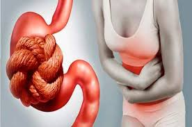

Alivia la fatiga
– El agua es utilizada por el organismo para eliminar toxinas y productos de desecho que éste no necesita. Cuando hay menos agua en el cuerpo,
el corazón tiene que trabajar más para bombear la sangre oxigenada a todas las células y otros órganos principales, y eso puede causar fatiga. Además, al acercarse a un estado de deshidratación, el organismo disminuirá el rendimiento muscular,
lo que provoca esa sensación de cansancio. Beber agua es fundamental para que nuestro cuerpo funcione correctamente.

– Evita el dolor de cabeza y las migrañas
– En la mayoría de los casos, la razón principal de los dolores de cabeza y migrañas es la deshidratación. Eliminar estas molestias, que también pueden darse en otras partes del cuerpo como la espalda, es uno de los beneficios de tomar dos litros de agua al día.

– Ayuda en la digestión y evita el estreñimiento
Cuando bebemos suficiente agua aumenta la tasa de metabolismo, es decir, los alimentos que consumimos se descomponen apropiadamente. De esta forma, uno de los beneficios de beber agua en ayunas es ayudar a que el sistema digestivo funcione correctamente, previniendo el estreñimiento y mejorando la digestión, lo que a su vez repercute en la prevención de enfermedades y en una mejor calidad de vida.